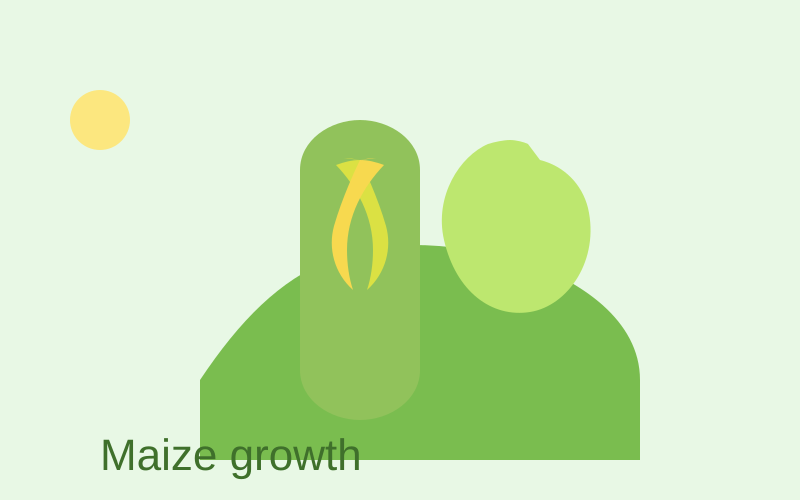
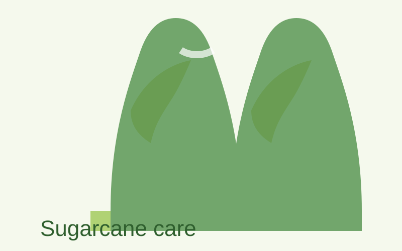
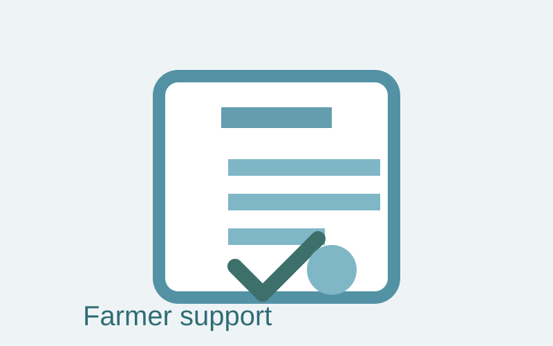

Maize cultivation visuals
Quick visual tips for maize seed selection, nutrient timing and irrigation.
Fresh farming stories, practical guides, and crop management tips for every season.
Illustrated summaries for maize, sugarcane and government support pages.

Quick visual tips for maize seed selection, nutrient timing and irrigation.

Use this guide to see sugarcane management stages and crop care needs.

Visualize key subsidies, credit programs and farming support initiatives.
A practical blueprint for topic clusters, content silos, internal linking, and long-term SEO growth.
A scalable framework for evergreen, seasonal, and calculator-linked content built around search intent and publishing cadence.
See how AgriCalc Pakistan supports trustworthy, accessible and review-ready content.
Explore the repeatable system for creating practical agriculture articles and knowledge base pages.
A modular blueprint for crops, soil, fertilizers, irrigation, livestock, glossary, FAQs, calculators, and future expansion.
A reusable structure for crop profiles, cultivation sections, problem management, calculators, FAQs, glossary links, and multilingual growth.
A modular architecture for soil, irrigation, weather, fertilizers, plant protection, livestock, machinery, glossary, unit conversions, and cross-linking.
A comprehensive framework for government resources, research references, future weather/market integration, data validation, audit trails, and long-term maintenance.
A comprehensive deployment guide covering GitHub Pages, Cloudflare configuration, custom domains, performance optimization, security, SEO, and pre-launch checklists.
A comprehensive operations framework covering CI/CD, release management, QA procedures, monitoring, backup/recovery, documentation, and long-term sustainability.
See how AgriCalc Pakistan combines AI-assisted drafting with human review to publish trustworthy, maintainable content.
Browse the pillar-based category architecture for crops, tools, glossary, FAQ, and resource hubs.
Step-by-step wheat cultivation from soil preparation and seed selection to harvest.
Compare top wheat varieties, yield potential and regional recommendations.
Complete rice cultivation strategies for Pakistani paddy growers and season planning.
Effective rice disease control for brown spot, blast, sheath rot and bakanae.
Practical cotton planting, nutrient timing, and pest management for higher yield.
Timed spray recommendations to protect cotton from jassids, aphids, bollworm and more.
A practical sugarcane guide covering planting, nutrition, irrigation, and harvest.
Recommended NPK timings and secondary nutrition for higher sugarcane tonnage.
Step-by-step maize crop planning, planting, and field management advice.
Water-saving irrigation tips and scheduling for healthy maize growth.
Key farmer support programs, subsidies, and credit offerings for 2026.